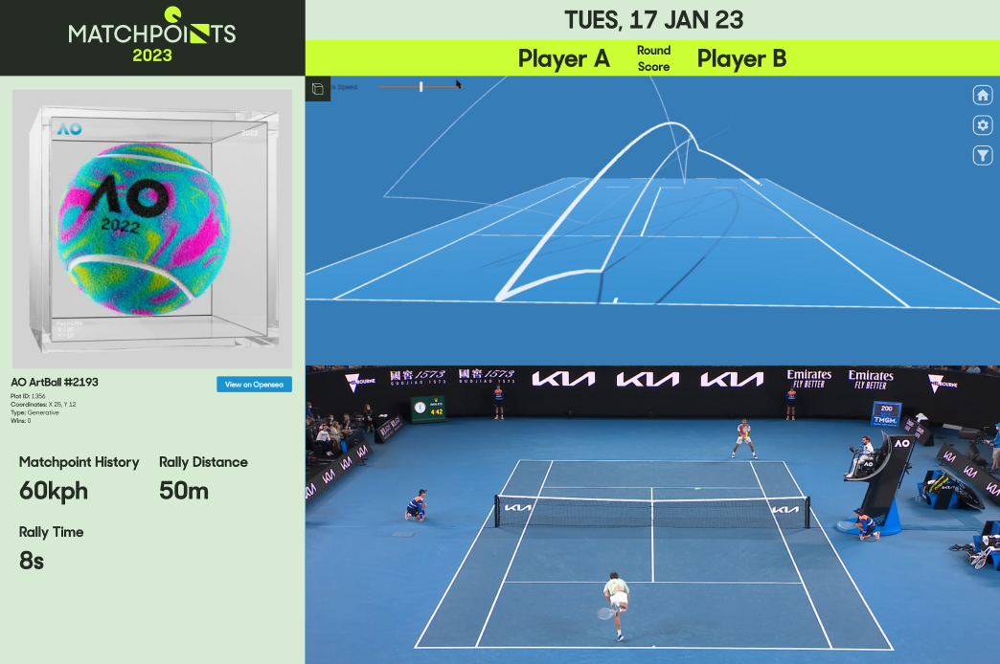
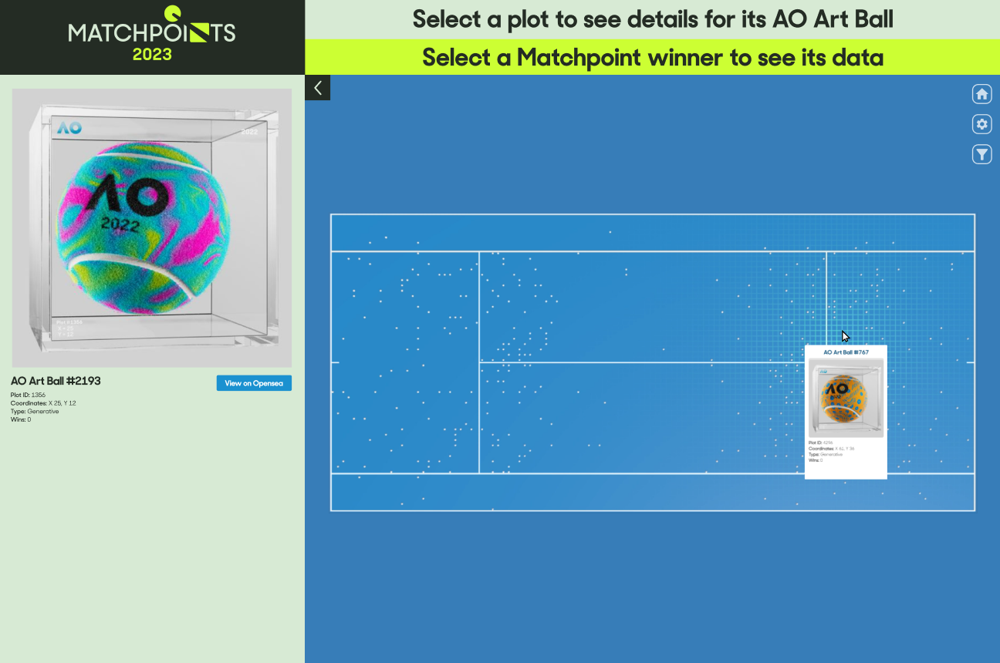
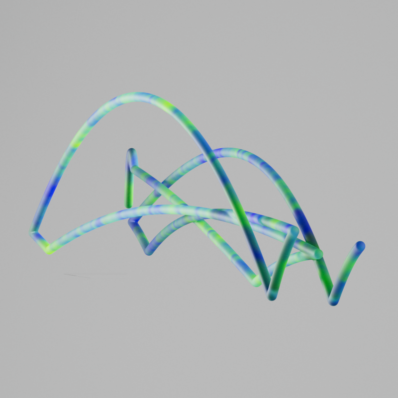
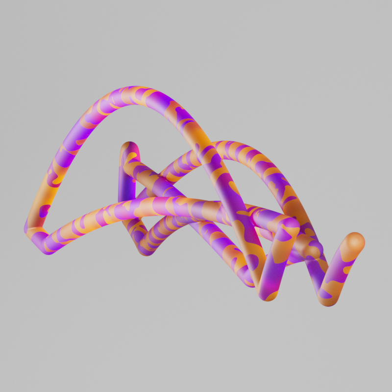
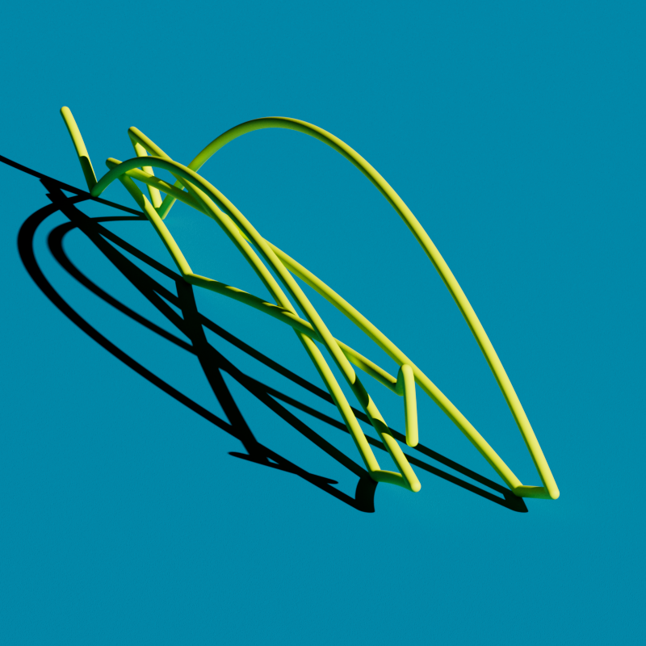
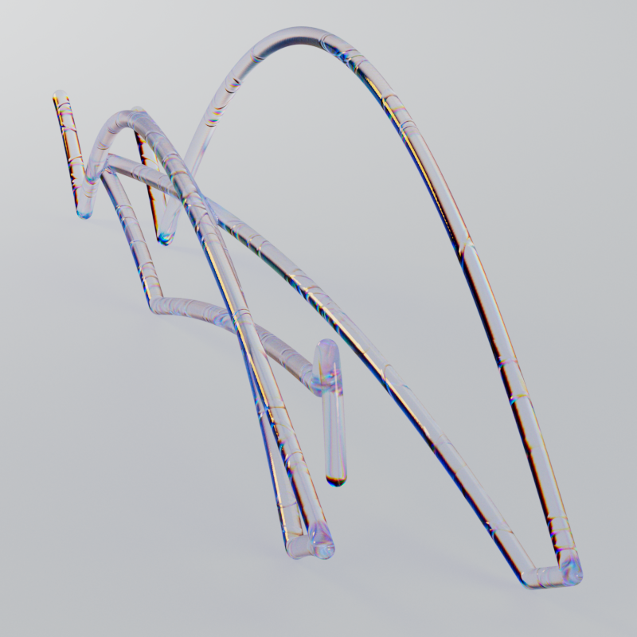

Australian Open 2023
Bringing match data from Hawk-Eye, the technology used to track every rally played at the Australian Open, we created a series of interactive 3D sculptures corresponding to every match-point played during the tournament's 2023 edition.
Visit Site
Process
The project relied on a pipeline consisting of SideFX Houdini for converting data into 3D path trails, and Unity to build the interactive experience using WebGL.


Research and Development Styleframes



